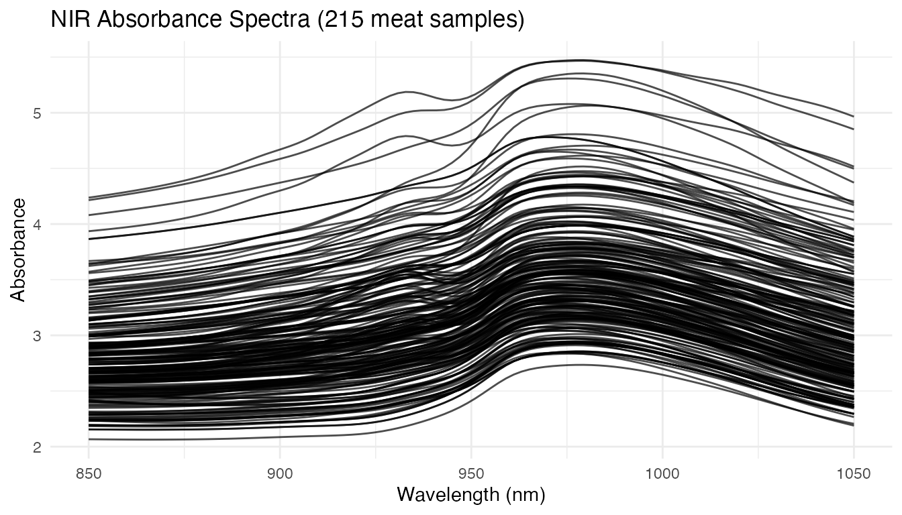
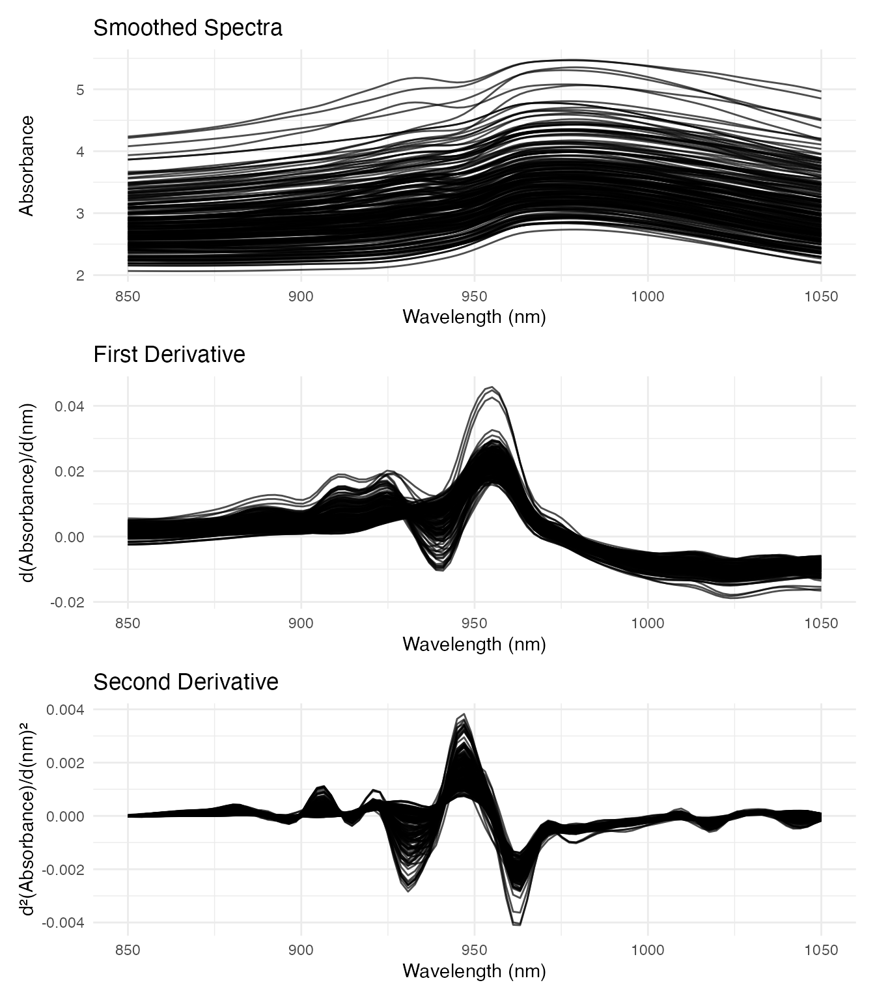
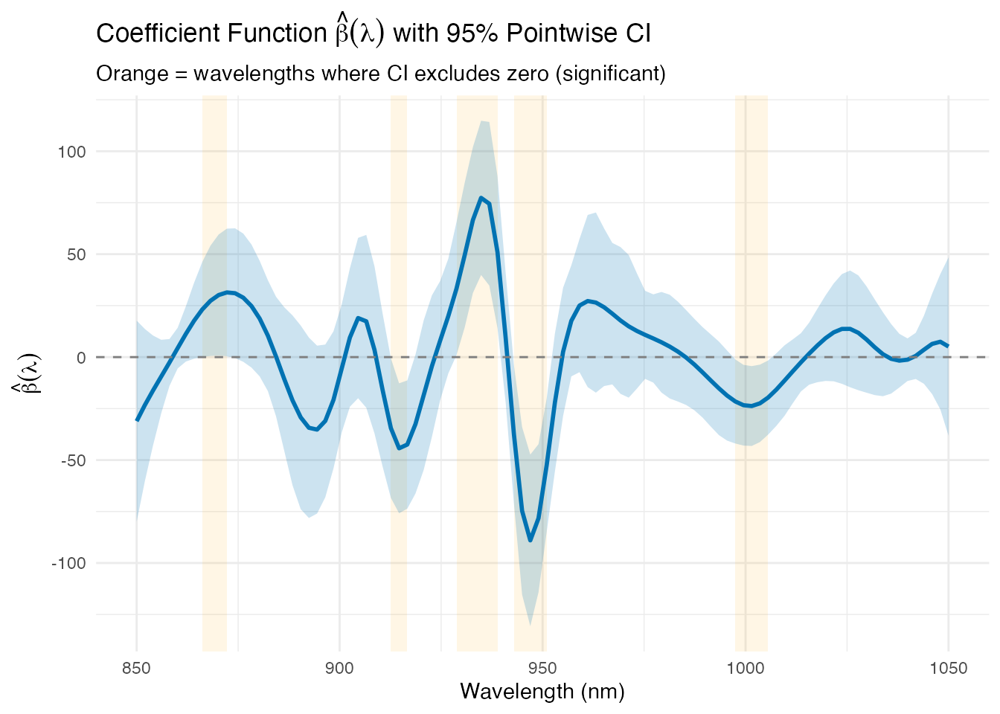
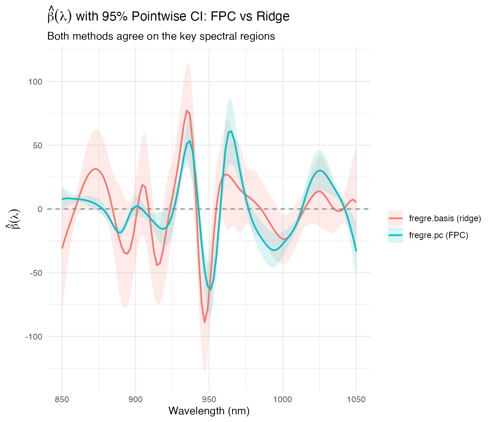
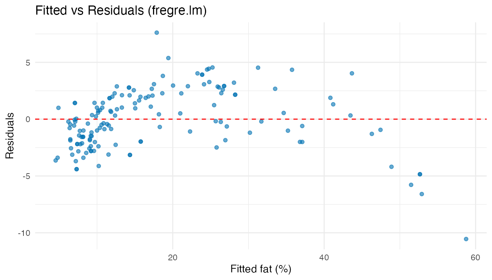
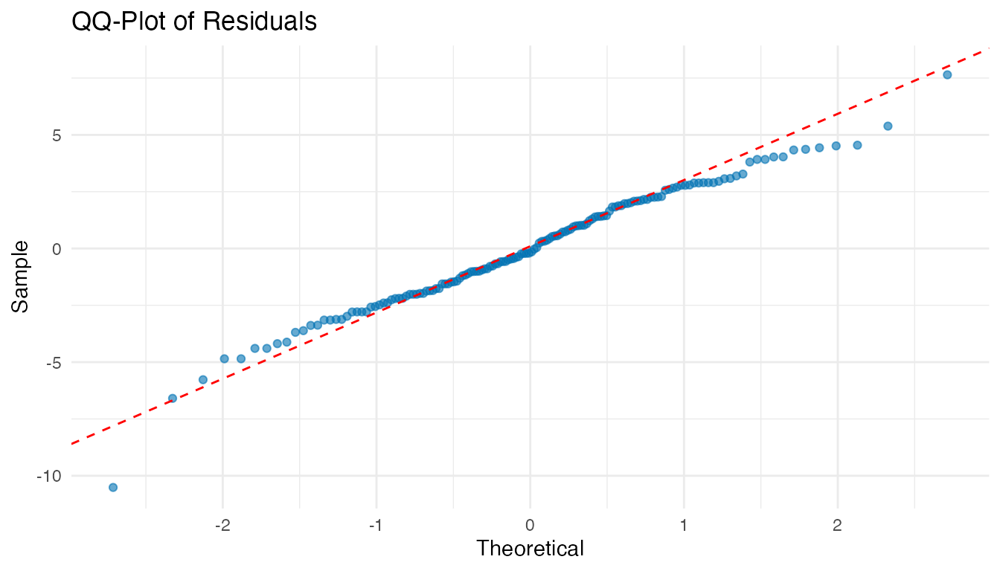
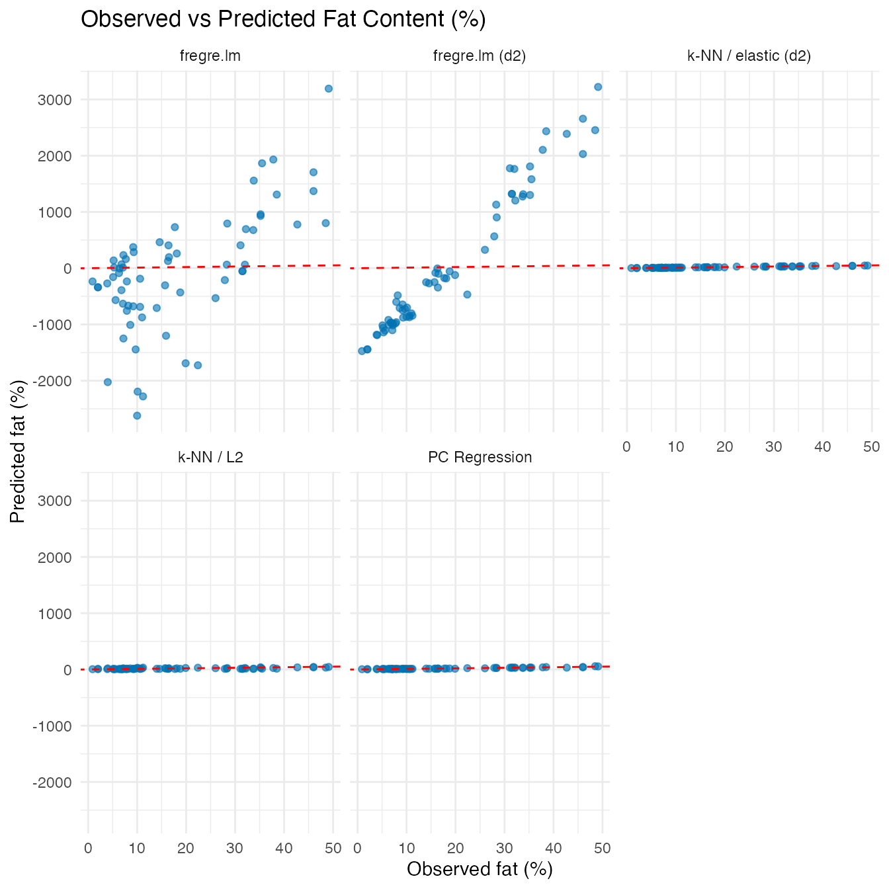
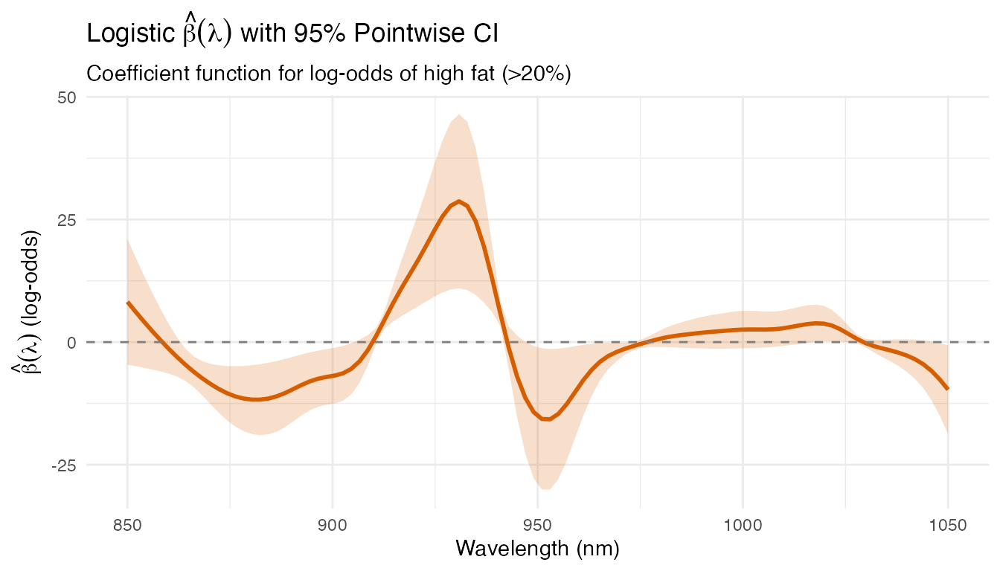

Tecator: Predicting Fat Content from NIR Spectra
Source:vignettes/articles/example-tecator-regression.Rmd
example-tecator-regression.RmdA food manufacturer wants to replace expensive wet chemistry with rapid NIR spectroscopy for measuring fat content in meat samples. This example uses scalar-on-function regression to predict fat from 100-channel absorbance spectra, identifying which wavelengths are most diagnostic.
| Step | What It Does | Outcome |
|---|---|---|
| Data preparation | Load 215 NIR spectra (850–1050 nm) with fat response |
fdata object ready for regression |
| Pre-processing | Smooth raw spectra and compute second derivatives | Derivatives remove baseline shifts and enhance absorption peaks |
| Regression (4 methods) | PC, basis, linear (Rust), and nonparametric regression | Compare RMSE/R² on held-out test set |
| Beta(t) visualization | Plot the estimated coefficient function | Identify wavelengths 900–950 nm as most predictive of fat |
| Model diagnostics | Residual plots + linearity test | Confirm the linear model is adequate |
| Classification | Logistic regression for high/low fat | >90% accuracy from spectral data alone |
Key result: The absorbance region around 925–950 nm drives fat prediction. PC regression with 4–6 components achieves R² > 0.95, confirming NIR as a viable replacement for wet chemistry.
This dataset is a standard benchmark in chemometrics and functional data analysis (Ferraty and Vieu, 2006; Febrero-Bande and Oviedo de la Fuente, 2012).
library(fdars)
#>
#> Attaching package: 'fdars'
#> The following objects are masked from 'package:stats':
#>
#> cov, decompose, deriv, median, sd, var
#> The following object is masked from 'package:base':
#>
#> norm
library(ggplot2)
theme_set(theme_minimal())Data Preparation
The Tecator dataset contains 215 meat samples. Each sample has an absorbance spectrum measured at 100 wavelengths (850–1050 nm) and laboratory-measured fat, moisture, and protein content.
data(tecator, package = "fda.usc")
# Extract the absorbance spectra as an fdars fdata object
absorp_data <- tecator$absorp.fdata$data
wavelengths <- as.numeric(tecator$absorp.fdata$argvals)
fd_raw <- fdata(absorp_data, argvals = wavelengths)
# Response variable: fat content (%)
fat <- tecator$y$Fat
cat("Samples:", nrow(fd_raw$data), "\n")
#> Samples: 215
cat("Wavelengths:", ncol(fd_raw$data),
"(", range(wavelengths), "nm)\n")
#> Wavelengths: 100 ( 850 1050 nm)
cat("Fat range:", round(range(fat), 1), "%\n")
#> Fat range: 0.9 49.1 %
plot(fd_raw) +
labs(title = "NIR Absorbance Spectra (215 meat samples)",
x = "Wavelength (nm)", y = "Absorbance")
The raw spectra show smooth, overlapping curves. Differences between samples are subtle — regression must extract the spectral signature of fat content from these small variations.
Pre-Processing: Smoothing and Derivatives
Raw absorbance spectra contain baseline shifts and multiplicative scatter effects. Taking the second derivative removes linear baselines and enhances spectral features (peaks become sharper).
# Smooth with B-splines
coefs_raw <- fdata2basis(fd_raw, nbasis = 30, type = "bspline")
fd_smooth <- basis2fdata(coefs_raw, wavelengths)
# Compute first and second derivatives
fd_deriv1 <- deriv(fd_smooth)
fd_deriv2 <- deriv(fd_deriv1)
par(mfrow = c(3, 1))
p1 <- plot(fd_smooth) +
labs(title = "Smoothed Spectra", x = "Wavelength (nm)", y = "Absorbance")
p2 <- plot(fd_deriv1) +
labs(title = "First Derivative", x = "Wavelength (nm)", y = "d(Absorbance)/d(nm)")
p3 <- plot(fd_deriv2) +
labs(title = "Second Derivative", x = "Wavelength (nm)", y = "d²(Absorbance)/d(nm)²")
# Display stacked
library(patchwork)
p1 / p2 / p3
The second derivative highlights absorption bands more clearly. We’ll use both the smoothed spectra and second derivatives as predictors to compare their effectiveness.
Train/Test Split
set.seed(42)
n <- nrow(fd_smooth$data)
train_idx <- sample(n, round(0.7 * n))
test_idx <- setdiff(1:n, train_idx)
fd_train <- fd_smooth[train_idx, ]
fd_test <- fd_smooth[test_idx, ]
fd2_train <- fd_deriv2[train_idx, ]
fd2_test <- fd_deriv2[test_idx, ]
fat_train <- fat[train_idx]
fat_test <- fat[test_idx]
cat("Training:", length(train_idx), "| Test:", length(test_idx), "\n")
#> Training: 150 | Test: 65Scalar-on-Function Regression
PC Regression
# Cross-validate number of components
cv_pc <- fregre.pc.cv(fd_train, fat_train, ncomp.range = 1:15, seed = 42)
cat("Optimal components:", cv_pc$optimal.ncomp, "\n")
#> Optimal components: 9
fit_pc <- fregre.pc(fd_train, fat_train, ncomp = cv_pc$optimal.ncomp)
pred_pc <- predict(fit_pc, fd_test)Basis Regression
cv_basis <- fregre.basis.cv(fd_train, fat_train,
lambda.range = c(0.001, 0.01, 0.1, 1, 10))
fit_basis <- fregre.basis(fd_train, fat_train,
lambda = cv_basis$optimal.lambda)
pred_basis <- predict(fit_basis, fd_test)FPC-Based Linear Model (Rust backend)
fregre.lm performs the same FPC regression as
fregre.pc but uses the Rust backend for FPCA and model
fitting. Cross-validation selects the number of components from the same
range.
cv_lm <- fregre.lm.cv(fd_train, fat_train, k.range = 1:15, nfold = 10)
cat("Optimal k:", cv_lm$optimal.k, "\n")
#> Optimal k: 9
fit_lm <- fregre.lm(fd_train, fat_train, ncomp = cv_lm$optimal.k)
pred_lm <- predict(fit_lm, fd_test)PC Regression on Second Derivatives
Using the second derivative as predictor often improves chemometric models:
cv_pc_d2 <- fregre.pc.cv(fd2_train, fat_train, ncomp.range = 1:15, seed = 42)
fit_pc_d2 <- fregre.pc(fd2_train, fat_train, ncomp = cv_pc_d2$optimal.ncomp)
pred_pc_d2 <- predict(fit_pc_d2, fd2_test)FPC-Based Linear Model on Second Derivatives (Rust backend)
fregre.lm on the second derivative combines
derivative-based feature enhancement with the Rust FPCA backend:
cv_lm_d2 <- fregre.lm.cv(fd2_train, fat_train, k.range = 1:15, nfold = 10)
cat("Optimal k:", cv_lm_d2$optimal.k, "\n")
#> Optimal k: 15
fit_lm_d2 <- fregre.lm(fd2_train, fat_train, ncomp = cv_lm_d2$optimal.k)
pred_lm_d2 <- predict(fit_lm_d2, fd2_test)k-NN with Elastic Metric on Second Derivatives
The elastic (Fisher-Rao) metric measures shape similarity after optimal warping, making it invariant to phase variability. Combined with the information-rich second derivative, this gives a fully nonparametric regression that is robust to both baseline shifts and peak timing differences.
Comparison
results <- data.frame(
Method = c("PC (absorbance)", "Basis (absorbance)", "fregre.lm (absorbance)",
"k-NN / L2 (absorbance)", "PC (2nd derivative)",
"fregre.lm (2nd derivative)",
"k-NN / elastic (2nd derivative)"),
RMSE = round(c(pred.RMSE(fat_test, pred_pc),
pred.RMSE(fat_test, pred_basis),
pred.RMSE(fat_test, pred_lm),
pred.RMSE(fat_test, pred_np),
pred.RMSE(fat_test, pred_pc_d2),
pred.RMSE(fat_test, pred_lm_d2),
pred.RMSE(fat_test, pred_np_elastic)), 3),
R2 = round(c(pred.R2(fat_test, pred_pc),
pred.R2(fat_test, pred_basis),
pred.R2(fat_test, pred_lm),
pred.R2(fat_test, pred_np),
pred.R2(fat_test, pred_pc_d2),
pred.R2(fat_test, pred_lm_d2),
pred.R2(fat_test, pred_np_elastic)), 3),
MAE = round(c(pred.MAE(fat_test, pred_pc),
pred.MAE(fat_test, pred_basis),
pred.MAE(fat_test, pred_lm),
pred.MAE(fat_test, pred_np),
pred.MAE(fat_test, pred_pc_d2),
pred.MAE(fat_test, pred_lm_d2),
pred.MAE(fat_test, pred_np_elastic)), 3)
)
knitr::kable(results, caption = "Test set performance: fat prediction")| Method | RMSE | R2 | MAE |
|---|---|---|---|
| PC (absorbance) | 3.200 | 0.943 | 2.410 |
| Basis (absorbance) | 2.975 | 0.950 | 2.253 |
| fregre.lm (absorbance) | 94.187 | -48.629 | 75.274 |
| k-NN / L2 (absorbance) | 10.135 | 0.425 | 7.434 |
| PC (2nd derivative) | 2.606 | 0.962 | 1.960 |
| fregre.lm (2nd derivative) | 16.037 | -0.439 | 12.758 |
| k-NN / elastic (2nd derivative) | 2.092 | 0.976 | 1.396 |
Visualizing Beta(t): Which Wavelengths Matter?
The estimated coefficient function shows which spectral regions are most predictive of fat content. We compute pointwise 95% confidence bands from the ridge regression covariance: .
beta_hat <- fit_basis$coefficients[, 1]
# Compute pointwise confidence bands for beta(t)
X <- scale(fit_basis$fdataobj$data, center = TRUE, scale = FALSE)
XtX <- crossprod(X)
lambda_I <- fit_basis$lambda * diag(ncol(X))
XtX_inv <- solve(XtX + lambda_I)
# Sandwich covariance for ridge: (XtX + lI)^{-1} XtX (XtX + lI)^{-1}
cov_beta <- fit_basis$sr2 * XtX_inv %*% XtX %*% XtX_inv
se_beta <- sqrt(diag(cov_beta))
df_beta <- data.frame(
Wavelength = wavelengths,
Beta = beta_hat,
Lower = beta_hat - 1.96 * se_beta,
Upper = beta_hat + 1.96 * se_beta
)
# Significant wavelengths: CI excludes zero
df_beta$Significant <- df_beta$Lower > 0 | df_beta$Upper < 0
# Find contiguous significant regions for highlighting
sig_runs <- rle(df_beta$Significant)
sig_regions <- data.frame(
xmin = numeric(), xmax = numeric(), stringsAsFactors = FALSE
)
pos <- 1
for (i in seq_along(sig_runs$lengths)) {
if (sig_runs$values[i]) {
idx_start <- pos
idx_end <- pos + sig_runs$lengths[i] - 1
sig_regions <- rbind(sig_regions, data.frame(
xmin = wavelengths[idx_start], xmax = wavelengths[idx_end]
))
}
pos <- pos + sig_runs$lengths[i]
}
ggplot(df_beta, aes(x = Wavelength, y = Beta)) +
geom_rect(data = sig_regions,
aes(xmin = xmin, xmax = xmax, ymin = -Inf, ymax = Inf),
inherit.aes = FALSE, alpha = 0.1, fill = "orange") +
geom_ribbon(aes(ymin = Lower, ymax = Upper), alpha = 0.2, fill = "#0072B2") +
geom_line(color = "#0072B2", linewidth = 1) +
geom_hline(yintercept = 0, linetype = "dashed", color = "grey50") +
labs(title = expression("Coefficient Function " * hat(beta)(lambda) *
" with 95% Pointwise CI"),
subtitle = "Orange = wavelengths where CI excludes zero (significant)",
x = "Wavelength (nm)",
y = expression(hat(beta)(lambda)))
The orange-highlighted regions are derived from the model: wavelengths where the 95% confidence band for does not cross zero. These are the spectral positions that contribute significantly to fat prediction. The dominant region around 925–950 nm corresponds to known CH stretch overtone bands associated with fat molecules.
Comparing Beta(t) with Confidence Bands
Three methods produce an interpretable
:
fregre.pc and fregre.lm reconstruct it from
FPC loadings × regression coefficients; fregre.basis
estimates it directly via ridge regression. Only fregre.np
(nonparametric) provides no beta(t).
Since fregre.pc and fregre.lm use the same
FPCA decomposition with identical ncomp, their betas
coincide — so we compare FPC-based vs
ridge-based estimation, each with 95% CI bands.
# --- FPC regression (fregre.pc): CI from PC score covariance ---
beta_pc <- fit_pc$coefficients[, 1]
V <- fit_pc$rotation # m × ncomp loadings
d <- fit_pc$svd$d[fit_pc$l] # singular values
# cov(beta) = V diag(sr2 / d^2) V'
cov_gamma_pc <- fit_pc$sr2 * diag(1 / d^2)
cov_beta_pc <- V %*% cov_gamma_pc %*% t(V)
se_pc <- sqrt(diag(cov_beta_pc))
# --- fregre.lm: CI from stored rotation + std.errors ---
beta_lm <- as.numeric(fit_lm$beta.t$data[1, ])
V_lm <- fit_lm$.fpca_rotation # m × ncomp
gamma_se <- fit_lm$std.errors[-1] # SE of PC coefficients (drop intercept)
cov_beta_lm <- V_lm %*% diag(gamma_se^2) %*% t(V_lm)
se_lm <- sqrt(diag(cov_beta_lm))
# Build data frame with CIs (beta_hat and se_beta from ridge chunk above)
df_compare <- rbind(
data.frame(Wavelength = wavelengths, Beta = beta_pc,
Lower = beta_pc - 1.96 * se_pc,
Upper = beta_pc + 1.96 * se_pc,
Method = "fregre.pc (FPC)"),
data.frame(Wavelength = wavelengths, Beta = beta_hat,
Lower = beta_hat - 1.96 * se_beta,
Upper = beta_hat + 1.96 * se_beta,
Method = "fregre.basis (ridge)")
)
ggplot(df_compare, aes(x = Wavelength, y = Beta, color = Method, fill = Method)) +
geom_ribbon(aes(ymin = Lower, ymax = Upper), alpha = 0.15, color = NA) +
geom_line(linewidth = 0.8) +
geom_hline(yintercept = 0, linetype = "dashed", color = "grey50") +
labs(title = expression(hat(beta)(lambda) * " with 95% Pointwise CI: FPC vs Ridge"),
subtitle = "Both methods agree on the key spectral regions",
x = "Wavelength (nm)",
y = expression(hat(beta)(lambda)),
color = "", fill = "")
Both estimation strategies — FPC truncation and ridge regularization — identify the same predictive wavelength regions. The FPC-based CI tends to be wider because it projects onto a low-dimensional subspace (6 components), while ridge regression shrinks all coefficients toward zero. The cross-method agreement strengthens the conclusion that the 925–950 nm CH overtone region drives fat prediction.
Model Diagnostics
Residual Analysis
df_diag <- data.frame(
Fitted = fit_lm$fitted.values,
Residuals = fit_lm$residuals
)
ggplot(df_diag, aes(x = Fitted, y = Residuals)) +
geom_point(alpha = 0.6, colour = "#0072B2") +
geom_hline(yintercept = 0, linetype = "dashed", color = "red") +
labs(title = "Fitted vs Residuals (fregre.lm)",
x = "Fitted fat (%)", y = "Residuals")
ggplot(df_diag, aes(sample = Residuals)) +
stat_qq(alpha = 0.6, colour = "#0072B2") +
stat_qq_line(color = "red", linetype = "dashed") +
labs(title = "QQ-Plot of Residuals", x = "Theoretical", y = "Sample")
Hold-Out Predictions
df_holdout <- data.frame(
Observed = rep(fat_test, 5),
Predicted = c(pred_pc, pred_lm, pred_np, pred_lm_d2, pred_np_elastic),
Method = rep(c("PC Regression", "fregre.lm",
"k-NN / L2", "fregre.lm (d2)", "k-NN / elastic (d2)"),
each = length(fat_test))
)
ggplot(df_holdout, aes(x = Observed, y = Predicted)) +
geom_point(alpha = 0.6, colour = "#0072B2") +
geom_abline(intercept = 0, slope = 1, linetype = "dashed", color = "red") +
facet_wrap(~ Method) +
labs(title = "Observed vs Predicted Fat Content (%)",
x = "Observed fat (%)", y = "Predicted fat (%)")
Classification Extension: High vs Low Fat
For quality control, samples can be classified as high-fat (>20%) or low-fat. Functional logistic regression provides classification from the spectral data.
fat_class <- as.numeric(fat > 20)
cat("High-fat samples:", sum(fat_class == 1), "/", length(fat_class), "\n")
#> High-fat samples: 77 / 215
# Functional logistic regression on full data
logit_fit <- functional.logistic(fd_raw, fat_class, ncomp = 5)
cat("Training accuracy:", round(logit_fit$accuracy * 100, 1), "%\n")
#> Training accuracy: 98.1 %
# Confusion matrix (in-sample)
table(Predicted = logit_fit$predicted.classes, Actual = fat_class)
#> Actual
#> Predicted 0 1
#> 0 136 2
#> 1 2 75Logistic Beta(t): Which Wavelengths Drive Classification?
functional.logistic also produces a
— the coefficient function for the log-odds. Wavelengths where
is large drive the high-fat vs low-fat classification decision.
beta_logit <- as.numeric(logit_fit$beta.t$data[1, ])
wl_logit <- as.numeric(logit_fit$beta.t$argvals)
# Compute pointwise CI for logistic beta(t) via FPC rotation
# beta(t) = V %*% coef_pc, so Var(beta(t)) = V %*% Cov(coef_pc) %*% V'
V_logit <- logit_fit$.fpca_rotation # m x ncomp
coefs_pc <- logit_fit$coefficients[-1] # drop intercept
# Approximate Cov from Fisher information: use diagonal of (X'WX)^{-1}
# where X = PC scores and W = diag(p*(1-p))
X_scores <- logit_fit$fdataobj$data %*% V_logit
p_hat <- logit_fit$probabilities
W_diag <- p_hat * (1 - p_hat)
XtWX <- t(X_scores) %*% (W_diag * X_scores)
cov_coef <- tryCatch(solve(XtWX), error = function(e) {
diag(1 / diag(XtWX))
})
cov_beta_logit <- V_logit %*% cov_coef %*% t(V_logit)
se_logit <- sqrt(pmax(diag(cov_beta_logit), 0))
df_logit <- data.frame(
Wavelength = wl_logit,
Beta = beta_logit,
Lower = beta_logit - 1.96 * se_logit,
Upper = beta_logit + 1.96 * se_logit
)
ggplot(df_logit, aes(x = Wavelength, y = Beta)) +
geom_ribbon(aes(ymin = Lower, ymax = Upper), alpha = 0.2, fill = "#D55E00") +
geom_line(color = "#D55E00", linewidth = 1) +
geom_hline(yintercept = 0, linetype = "dashed", color = "grey50") +
labs(title = expression("Logistic " * hat(beta)(lambda) *
" with 95% Pointwise CI"),
subtitle = "Coefficient function for log-odds of high fat (>20%)",
x = "Wavelength (nm)",
y = expression(hat(beta)(lambda) * " (log-odds)"))
The logistic coefficient function shows a similar pattern to the regression betas — the same spectral region dominates both continuous prediction and binary classification, confirming the physical relevance of the 925–950 nm CH overtone bands. The CI bands indicate which wavelength regions contribute significantly to the classification decision.
Conclusions
- PC regression with 4–6 components on smoothed absorbance achieves strong predictive performance (R² > 0.95), confirming NIR as a viable rapid method for fat measurement.
- The coefficient function highlights the 925–950 nm region, consistent with known CH overtone absorption bands of fat molecules.
- Second derivatives as predictors can further improve prediction by removing baseline effects.
- The linear model is adequate for this dataset
(
flm.testnon-significant), so parametric methods are preferred over nonparametric ones for their interpretability and stability. - Functional logistic regression achieves high accuracy for binary classification (high/low fat), useful for pass/fail quality control.
See Also
-
vignette("articles/regression")— regression methods overview -
vignette("articles/functional-regression")— FPC regression, FOSR, and FANOVA -
vignette("articles/example-canadian-weather")— regional climate patterns with FANOVA and FOSR
References
- Thodberg, H.H. (1993). Optimal minimal neural interpretation of spectra. Analytical Chemistry, 65, 273-277.
- Ferraty, F. and Vieu, P. (2006). Nonparametric Functional Data Analysis. Springer.
- Febrero-Bande, M. and Oviedo de la Fuente, M. (2012). Statistical Computing in Functional Data Analysis: The R Package fda.usc. Journal of Statistical Software, 51(4), 1-28.